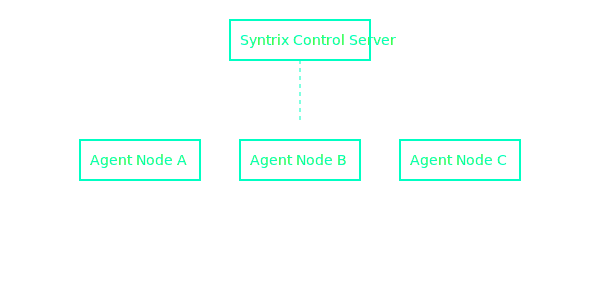

What is WhisperNet?
WhisperNet is a lightweight, secure agent framework that enables authorized operators to monitor, execute, and enforce remote policy across distributed systems.
Deployment Architecture
Agents are deployed on endpoints and report back to a hardened control server. Optional modules support encrypted script push, remote service control, and metric visualization.
Key Features
- 🔒 Encrypted communication using AES and key exchange
- 📡 Socket, email, and API-based activation options
- 📈 Real-time agent metrics and logging
- ⚙️ Embedded script interpreter with access control
Deployment
Start by deploying the open-source WhisperNet client agent. The server suite can be acquired through our verified channel:
Buy Server Suite